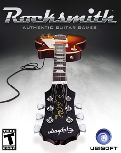

Rocksmith(){
Games
Por: Andrêssa Abreu

Capa do jogo RockSmith
Rocksmith é um dos sucessos da produtora Ubisoft disponível para Xbox 360, Play Station 3 e PC. O game é um tipo de “Guitar Hero”, mas com a diferença de usar instrumentos reais, e não os controles de plástico. Você pluga sua própria guitarra ou violão elétrico e aprende enquanto você joga. É uma eficaz ferramenta de ensino e um jogo divertido.
Quando inicializa-se o jogo uma voz suave explica, juntamente com recursos visuais, o básico de uma guitarra. Você pode escolher jogar com a mão esquerda ou direita, juntamente com o tipo de guitarra que você está jogando.
Um aspecto interessante é que a jogabilidade é ajustável. Ao contrário de outros jogos de vídeo, a dificuldade é gradualmente aumentada ou diminuída automaticamente pelo jogo, baseado no seu aproveitamento ao longo do mesmo. Por isso, Rochsmith é voltado tanto para músicos experientes, quanto para pessoas que nunca tocaram uma guitarra.
A pontuação é baseada nos seus erros e acertos, junto com o nível de dificuldade que você está jogando. Ao acumular pontos é possível desbloquear vários extras como: mini-jogos, desafios, guitarras virtuais, e vários "pedais" usados para alterar o som de sua guitarra.
Os mini-jogos são uma excelente opção para aprimorar as habilidades específicas do jogador. Eles ensinam como mover sua mão ao longo do braço da guitarra, aumentar a destreza dos dedos, testar os seus reflexos e aprender notas musicais, acordes e técnicas de guitarra.
O catálogo de músicas disponíveis envolve mais de 40 músicas de variados estilos de rock, contando com músicas de bandas como: The Rolling Stones, The Cure, Lynrd Skynrd,The Strokes, Muse, Radiohead, Nirvana e The Foo Fighters disponíveis para download.
Entretanto para começar o jogo é necessário um cabo adaptador especial vendido pela Ubisoft que transforma o sinal analógico da guitarra em sinal digital. A guitarra pode ser qualquer uma, até mesmo um violão elétrico, mas o cabo tem que ser o modelo específico da produtora.
Abaixo o trailer do jogo:
Referências:
Tech Tudo
Ubisoft
Site Oficial do Rocksmith
Site Oficial do Guitar Hero
}